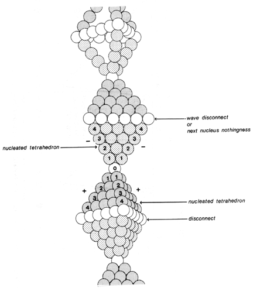

|  |
| Fig 1012.14B Wave, Quanta, Indigs, Unity-Is-Plural Bow Ties: This works for any pair of the ten pairs of tetrahedra in the vector equilibrium, of which only four pairs are active at any one time. The bow-tie waves illustrate the importance of zero. They come into phase with one another and with physics and chemistry. (Note the "Wave Disconnect" or next-nucleus nothingness.) |